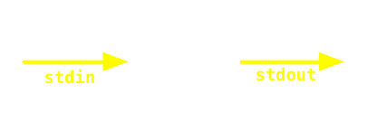
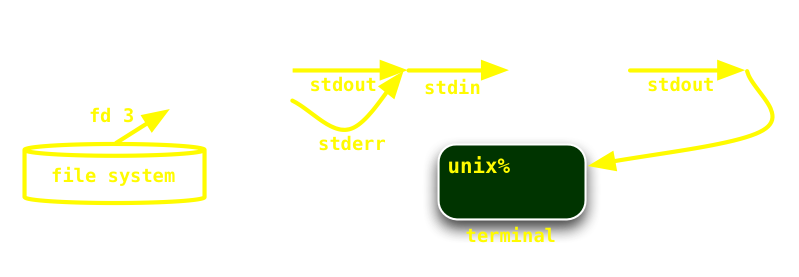
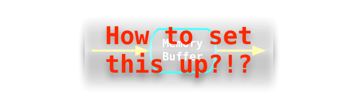

Signals
Processes can send and receive signals.
They are a sort of ultra-simple message.
The only content is the type of signal, a simple number.
- the types are encoded as a number from 1 to N
- MacOS X (BSD-like) has about 30 signals
- Linux has about 60 signals
- they act like very quick pings
- for convenience, short names are given to each type
E.g: Signal #11 is called SIGSEGV.
List of signals
You can get a full list of signals using the kill -l command:
macosx% kill -l
1) SIGHUP 2) SIGINT 3) SIGQUIT 4) SIGILL
5) SIGTRAP 6) SIGABRT 7) SIGEMT 8) SIGFPE
9) SIGKILL 10) SIGBUS 11) SIGSEGV 12) SIGSYS
13) SIGPIPE 14) SIGALRM 15) SIGTERM 16) SIGURG
17) SIGSTOP 18) SIGTSTP 19) SIGCONT 20) SIGCHLD
21) SIGTTIN 22) SIGTTOU 23) SIGIO 24) SIGXCPU
25) SIGXFSZ 26) SIGVTALRM 27) SIGPROF 28) SIGWINCH
29) SIGINFO 30) SIGUSR1 31) SIGUSR2
Signals On OS X
NAME Default Action Description
SIGHUP terminate process terminal line hangup
SIGINT terminate process interrupt program
SIGQUIT create core image quit program
SIGILL create core image illegal instruction
SIGTRAP create core image trace trap
SIGABRT create core image abort(3) call (formerly SIGIOT)
SIGEMT create core image emulate instruction executed
SIGFPE create core image floating-point exception
SIGKILL terminate process kill program
SIGBUS create core image bus error
SIGSEGV create core image segmentation violation
... etc...
Ref: sigvec(2)
Signals on Linux
Signal Value Action Comment
SIGHUP 1 Term Hangup detected on controlling terminal
or death of controlling process
SIGINT 2 Term Interrupt from keyboard
SIGQUIT 3 Core Quit from keyboard
SIGILL 4 Core Illegal Instruction
SIGABRT 6 Core Abort signal from abort(3)
SIGFPE 8 Core Floating point exception
SIGKILL 9 Term Kill signal
SIGSEGV 11 Core Invalid memory reference
... etc...
Ref: signal(7)
Sending signals 1
Signals are sent from one process to another on the same computer.
To send a signal you need two values:
- the number for the type of signal, e.g. 11
- (though it's better to use constants, e.g. SIGSEGV instead)
- the process ID (pid) of the receiver
- most languages have a simple method or function that takes these two values
and send the signal
Sending signals 2
These examples will all send the signal #15, SIGTERM
to a process with pid 1234 :
- Bash:
kill -TERM 1234 # same as kill -15 1234
- Perl:
kill(SIGTERM,1234); # SIGTERM is a constant
- PHP:
posix_kill(1234, SIGTERM);
- Ruby:
Process.kill("TERM", 1234)
Receiving signals 1
A process can set up handlers to run a
piece of code when a signal is received.
- not all signals can be handled (e.g. #9 a.k.a. SIGKILL)
- the handler is run asynchronously from the code of the process
- handlers are not re-entrant
- only one signal at a time can be handled
- there is a default behavior for most signals
- you can't tell what other process has sent the signal!
Receiving signals 2
In all languages, this consists in setting up a method or
subroutine to handle a signal, and then telling the OS to
invoke that method when the signal is received.
- PHP:
function oh_no($s) { echo "Hello" }
pcntl_signal(SIGUSR1, "oh_no");
- Ruby:
Signal.trap("USR1") do
puts "Hello"
end
Common signals
| Signal name |
Default effect |
Trappable? |
Use it for |
| INT (2) |
terminates process |
Yes |
User wants out? |
| TERM (15) |
terminates process |
Yes |
Clean up properly |
| KILL (9) |
terminates process |
Nope! |
Can't do anything about it |
| USR1, USR2 |
No effect |
Yes! |
Anything you want |
Example A, 1
Script test_inc.rb
#!/usr/bin/ruby
float = 0.0
counter = 0
while true do
float = float.next_float
counter += 1
puts "Float=" + float.to_s if counter % 1000000 == 0
end
We get about two reports per second on my Mac mini:
unix% ruby test_inc.rb
Float=4.940656e-318
Float=9.881313e-318
Float=1.482197e-317
Float=1.9762626e-317
Float=2.470328e-317
Float=2.964394e-317
...
Example A, 2
Improved script test_inc.rb
#!/usr/bin/ruby
float = 0.0
Signal.trap("USR1") { puts "Float=" + float.to_s }
while true do
float = float.next_float
end
In two terminals:
unix% ruby test_inc.rb
Float=1.158144256e-315
Float=1.826497665e-315
Float=1.014102923e-314
unix% kill -USR1 3272
unix% kill -USR1 3272
unix% kill -USR1 3272
Example B, 1
In CBRAIN we have a maintenance process that regularly
archives some tasks' work directories. The main Ruby loop looks like this:
# Ruby from CBRAIN (simplified)
task_list.each do |task| # iterates over each task, likely hundreds
task.archive_work_dir() # this can take several minutes
done
Sometimes, maintenance (or shutdowns) need to be
performed while this process has already started.
If we kill this process at an arbitrary time, we will likely end up with:
- work directories only partly archived
- the database state inconsistent
- probably leftover temporary files
Example B, 2
What we do instead is allow the admin to tell
the process to finish up whatever task is currently
being archived, then stop before doing the next.
# Ruby from CBRAIN (simplified)
keep_going = true
Signal.trap("TERM") { keep_going = false }
task_list.each do |task| # iterates over each task, likely hundreds
task.archive_work_dir() # this can take several minutes
break if ! keep_going # break from the loop if signal received!
done
This way we know that no task is left at an inconsistent state.
Environment variables
Each process maintains a set of environment variables.
- they are simple pairs of key=value
- all keys and values are strings
- by convention, keys are UPPERCASE (but not enforced)
- e.g. USER=prioux
- a few have special meanings for the operating system (e.g. PATH)
- but most are arbitrary strings that programs agree on by convention or by specification
Misunderstandings
People think setting environment variables
affect magically all the programs they run. In fact:
- each process has its own private set of environment variables
- a process can set, change or delete its own variables
- but it is not possible for a process to change the environment variables of any other process
Puzzle: so how can this be even used for IPC ?
Environment variables
are inherited
Processes are created by forking from other processes.
- a parent process #123 sets ABC=def in its environment
- when the process fork(), the child process #987 also has ABC=def
- all environment variables are copied exactly, in fact
The end result is that a process has a capability to
transfer a set of X=y values to their child processes.
Obviously, this communication mechanism is unidirectional:
the information flows only from parents to their children.
Also, it can only be done once,
just before the child process is created.
fork() often leads to exec()
If processes create children that are identical,
how can there be processes of different types?
- yes, after fork(), the child process is identical
- but often, the child process elects to change its executable code
by invoking exec()
- this replaces the code, but keeps the environment variables intact
From the shell
(bash, sh, tcsh etc)
Interactively, the most common situation is:
- set environment variables of a shell process
- the shell itself likely doesn't care about those variables
- but other processes launched will inherit them and use them
unix% export VISUAL=/bin/vim # how bash sets its own environment variables
unix% git commit # will launch vim to edit commit message
unix% export VISUAL=/bin/nano
unix% git commit # now will launch nano to edit commit message
The env command 1
One of the simplest example is the UNIX command called env .
When run with no arguments:
- it just prints all the environment variables
it has received from its parent
unix% env
ABC=def
This is a great way to inspect what are the
environment variables currently set in your shell.
The env command 2
When run with some ENV assignments in front
of another command in argument...
env A=b C=d E=f command arg1 arg2 arg3 ...
- it will change its own environment (A=b, C=d, etc)
- then launch the command as a subprocess, which will inherit those variables
- the environment of the shell running env is, itself, of course not modified in any way
unix% env
ABC=def
unix% env TMPDIR=/home/prioux/tmp minc_scramble abcde_t1.mnc.gz
minc scramble 1.0 : file abcde_t1.mnc.gz scrambled in /home/prioux/tmp/abcde_t1.mnc.gz
unix% env
ABC=def
unix% export TMPDIR=/home/prioux/tmp # change this in SHELL level now
unix% env
ABC=def
TMPDIR=/home/prioux/tmp
System variables: examples
(Very few) environment variables have system meanings; the values they
have directly affect some system aspect of the process.
| Name |
Role |
Example |
| PATH |
dirs to search for executables (when running exec()) |
/bin:/usr/bin:/sbin |
| LD_LIBRARY_PATH |
dirs to search for libraries |
/lib:/usr/lib |
User or app variables: examples
Most environment variables are specific to
some programs, or are defined by conventions.
| Name |
Role |
Example |
| VISUAL |
if set, what program to use to launch a visual text editor |
/bin/vim |
| EDITOR |
if set, what program to use to launch a text editor |
/bin/ed |
| PAGER |
if set, what program to use to launch a pager |
/usr/bin/less |
| DISPLAY |
X-window client programs get the socket to the X-window server |
/tmp/socks-5/xwin:0 |
| LESS |
options for the pager less |
MeqisXRF |
In the manual pages
Most manual pages describe, at their end, the environment variables
used by their programs.
unix% man less
LESS(1) LESS(1)
NAME
less - opposite of more
SYNOPSIS
less -?
less --help
less -V
(skipped through using 'more')
ENVIRONMENT VARIABLES
EDITOR The name of the editor (used for the v command).
LANG Language for determining the character set.
LESS Options which are passed to less automatically.
(skipped through using 'more')
unix% export PAGER=less # from now on I page using 'less'
unix% export LESS=MeqisXRF # also, 'less' will default to these options
Example with 'mt'
mt is a UNIX command to manipulate magnetic tapes.
unix% mt -f /dev/nst0 status
unix% mt -f /dev/nst0 rewind
unix% mt -f /dev/nst0 fsf 3
unix% man mt # can I make this simpler?
unix% export TAPE=/dev/nst0 # seems the mt commands knows how to use this
unix% mt status
unix% mt rewind
unix% mt fsf 3
'source' statements
Some text files, known as initialization scripts,
often set environments variables.
Some are application-specific:
e.g. the init.sh in the MNI Quarantine.
Some are used for user preferences or customizations:
e.g. $HOME/.bashrc
In all cases, the script must be sourced, not executed.
unix% cat init.sh
export ABC=def
unix% bash init.sh # will not do anything: it's a distinct subprocess!
unix% echo $ABC
unix% source init.sh # affects current shell: it reads the lines itself
unix% echo $ABC
def
File descriptors
Each process maintains a private list of file descriptors (FDs)
- it's an array, indexed at 0
- each entry corresponds to communication channel
- they may not all be in use
- they can be unidirectional or bidirectional
FDs for other things than files
Typically they are connected to files...
but they can be many other things too:
- anonymous pipes to other processes
- named pipes
- network sockets
- UNIX-domain sockets
- block devices (disks, tapes etc)
- character devices (keyboards, ttys, speakers etc)
Processes can have lots of FDs
Modern LINUX systems allocate a lot of FDs to each process.
It used to be that a process could have a maximum of something like 64 FDs,
nowadays it's more like 1024!
Below: file descriptors for process mysqld on Ludmer server (excerpt)
COMMAND FD TYPE DEVICE SIZE/OFF NAME
mysqld 0r CHR 1,3 0t0 /dev/null
mysqld 1w REG 8,5 18042 /var/log/mysqld.log
mysqld 2w REG 8,5 18042 /var/log/mysqld.log
mysqld 3uW REG 8,5 1226833920 /var/lib/mysql/ibdata1
mysqld 4u REG 8,4 0 /tmp/ibHSKNG9 (deleted)
mysqld 5u REG 8,4 473 /tmp/ibP57ycj (deleted)
mysqld 6u REG 8,4 103 /tmp/ibLQzkIs (deleted)
mysqld 7u REG 8,4 0 /tmp/ibfRYmeC (deleted)
mysqld 8uW REG 8,5 5242880 /var/lib/mysql/ib_logfile0
mysqld 9uW REG 8,5 5242880 /var/lib/mysql/ib_logfile1
mysqld 10u IPv4 55802736 0t0 *:mysql (LISTEN)
mysqld 11u REG 8,4 1467 /tmp/ibROAYLL (deleted)
mysqld 12u unix 0xfff882ed80 0t0 /var/lib/mysql/mysql.sock
mysqld 13u IPv4 61704300 0t0 192.168.122.1:mysql->ccna:48212 (ESTABLISHED)
mysqld 15u REG 8,5 30720 /var/lib/mysql/wp_ludmer/wp_options.MYI
mysqld 16u REG 8,5 580904 /var/lib/mysql/wp_ludmer/wp_options.MYD
mysqld 37u REG 8,5 4096 /var/lib/mysql/canadachina/MMSE.MYI
mysqld 38u REG 8,5 1704 /var/lib/mysql/canadachina/MMSE.MYD
mysqld 52u REG 8,5 25300 /var/lib/mysql/wp_nist/wp_usermeta.MYD
FDs are reusable
File descriptors go through a cycle of re-use:
- they are opened and connected to a resource
- data is sent and/or received
- they are closed
- they can be reopened to another resource
- etc
A common confusion
File descriptors are lower level than file handles.
What we typically call a file handle (FH) is often the product of
a library or language providing an API to the file descriptors.
The most common one is the C stdio library, which works on structures
that hide the file descriptors.
Opening a file in C using file descriptors
int fd;
fd = open("/tmp/my_file",O_RDONLY);
Opening a file in C using the stdio file handles
File *fh;
fh = fopen("/tmp/my_file","r");
The three standard FDs
A common convention for UNIX processes are three standard FDs
- Standard input ('STDIN', file descriptor 0)
a stream going into the process
- Standard output ('STDOUT' file descriptor 1)
a stream going out of the process
- Standard error ('STDERR', file descriptor 2)
a stream going out the process too
Standard streams
connect to anything
Processes do not care what theirs
standards streams are connected to.
They can be connected to files, the streams of other
processes, terminals, etc, just like any other FDs.
Pipeline building blocks
The standard channels allow building
pipelines by linking processes together
Some useful building blocks
UNIX commands are part of a toolbox of processes
that can be used to build such pipelines.
# 'cat' command: copies all input to output
unix% cat
hello how are you?
^D
hello how are you?
# 'echo' command: sends as string each argument, each separated by one space
unix% echo hi how "are you" my,friend
hi how are you my,friend
# 'tee' command: copies all input to output, and a copy to a separate file
unix% tee myout
hi there
^D
hi there
unix% cat myout
hi there
# 'head' command: copies only the first N lines of of input to output
unix% head -2
line 1
line 2
line 3
^D
line 1
line 2
# 'tail' command: copies only the last N lines of of input to output
unix% tail -2
line 1
line 2
line 3
^D
line 2
line 3
# 'grep' command: select only the input lines matching a regex and sends them to output
unix% grep pierre
natacha drinks coffee
but pierre eats chocolate
and tristan writes code
^D
but pierre eats chocolate
# 'sort' command: reads all lines, sorts them, then sends them to output
unix% sort
natacha drinks coffee
but pierre eats chocolate
and tristan writes code
^D
and tristan writes code
but pierre eats chocolate
natacha drinks coffee

# 'cut' command: select part of lines and sends them to output
unix% cut -d: -f2,4
pierre:rioux:le:fou
alanis:morissette:the:singer
justin:trudeau:le:politicien
^D
rioux:fou
morissette:singer
trudeau:politicien
# 'uniq' command: removes successive duplicate lines and sends them to output
unix% uniq
hello
hello
goodbye
hello
^D
hello
goodbye
hello
# 'gzip' command: compress input stream and sends the compressed result to output
unix% gzip
pierre eats chocolate
^D
$@~Fz-#@0
Input stream: files or STDIN
Some commands act differently depending on how they
are invoked, when it comes to their inputs:
- With no arguments, they read from STDIN
- (all of the previous examples did that)
- With arguments, they read from each file in turn
Grep & Cut
The grep and cut command, when used together to
parse a data stream, might remind people of some relational DB primitives
# A sample (dummy) UNIX password file
prioux:x:1037:1037:Pierre Rioux:/home/prioux:/bin/bash
mero:x:1047:1047:Marc Rousseau:/home/mero:/bin/bash
sdas:x:1055:1055:Samir Das:/home/sdas:/bin/tcsh
nbeck:x:1055:1055:Natacha Beck:/home/sdas:/bin/sh
tglat:x:1055:1055:Tristan Glatard:/home/sdas:/bin/tcsh
Find all users of the tcsh shell:
unix% cat /etc/passwd | grep /bin/tcsh | cut -d: -f5
Samir Das
Tristan Glatard
So, what do grep and cut correspond to?
grep : the where clauses of a SQL select statement
cut : the select `columns` part.
Bash redirection
The bash shell (and other shells too) have
syntax to specify how to connect the standard channels
to files before the command is run.
unix% program 0< file # fd 0 = stdin
unix% program < file
unix% program 1> file # fd 1 = stdout
unix% program > file
unix% program 2> file # fd 2 = stderr
unix% program 0< abc 1> def 2> xyz
Bash piping
The standard output of a process can be connected
to the standard input of another one.
unix% wc -l memoirs.txt
7233
unix% cat memoirs.txt | wc -l
7233
Standard error handling
- often used for diagnostics or messages
- can be redirected or merged with standard output
unix% ls -l abc.txt def.txt
def.txt: no such file or directory
-rwxr-xr-x prioux wheel 12311 abc.txt
unix% ls -l abc.txt def.txt > out 2> err
unix% ls -l abc.txt def.txt | wc -l
def.txt: no such file or directory
1
unix% ls -l abc.txt def.txt 2>&1 | wc -l
2

Anonymous pipes
- they are features provided by the operating system
- they're used by the shell when piping "command | command"
- a pipe is unidirectional
- it connects a writer file descriptor of a process to a reader file descriptor of another process
- in between is a memory buffer, managed by the operating system
- the two processes have no real control over that buffer
Buffer behavior
The buffer's behavior can be compared to a barrel.
- process A, the writer, is pouring data in
- process B, the reader, is slurping data out
Unlike a barrel of water, the data's I/O order is kept.
A filled buffer
When the writer produces data faster
than the reader can process them:
- the buffer fills completely
- the operating system will suspend process A
- however, process B will run at full speed
An empty buffer
When the writer produces data slower
than the reader can process them:
- the buffer empties completely
- the operating system will suspend process B
- however, process A will run at full speed
Buffer specs
- in good old times, the buffer's size was 4096 bytes (4 Kib)
- in most modern UNIX systems, it is now 65536 bytes (64 Kib)
- blocking the reader or writer makes the system as efficient as possible
Setting up a pipe

If you look up the system calls of a UNIX system you'll
be surprised to discover that:
- given two existing processes A and B...
- ... there is no API to create a pipe between them!
The pipe() system call
There is however a system call that seems promising:
- it is called pipe()
- it creates a buffer
- it connects to it two file descriptors of the process
- one for reading, one for writing
- er... how is that useful ?!?
- ... what can we do?
Pipe and fork...
The solution is for the process to fork() after pipe()
- we get two processes
- both have access to both file descriptors
- the memory buffer is unique and shared
Pipe, fork and close
Then, each process decides to close() one of their file descriptors.
To send data from parent to child:
- the parent closes the read descriptor
- the child closes the write descriptor
Pipe, fork and close 2
To send data from child to parent:
- the parent closes the write descriptor
- the child closes the read descriptor
An example in plain Perl
#!/bin/perl
# Standard perl functions; no Perl libs, no strict, no nothin'
pipe(READFD,WRITEFD);
if (fork) { # this block is the parent process
close(READFD);
print WRITEFD "Good morning my son";
print "I am parent process $$ and I exit now.\n";
exit 0;
} else { # this block is the child process
close(WRITEFD);
$a=<READFD>;
print "I am child process $$ and I read '$a' from my parent. Exiting now.\n";
exit 0;
}
unix% perl pipe.pl
I am parent process 24891 and I exit now.
I am child process 24892 and I read 'Good morning my son' from my parent. Exiting now.
popen() to the rescue
- these pipe(), fork(), and close() can be cumbersome
- yet piping to or from another process is a common need
- many languages have libraries with wrappers to do all that:
- PHP:
$fh = popen("ls -l","r");
- Ruby:
fh = IO.popen("ls -l","r")
Toolbox approach in action
Some commands will use piping internally without telling you.
An example is tar -czf out.tar.gz somedir
The tar command does not implement compression.
It delegates this to a gzip child process that it pipes to.
unix% tar -czf /tmp/dummy.tar.gz MainStore &
[1] 28976
unix% pstree -p -a -c 28976
tar,28976 -czf /tmp/dummy.tar.gz MainStore
|
+--gzip,28977
unix% lsof -w -b -p 28976
COMMAND PID FD TYPE NAME
tar 28976 0u CHR /dev/pts/0
tar 28976 1u CHR /dev/pts/0
tar 28976 2u CHR /dev/pts/0
tar 28976 3r REG /data/MainStore/32/69/00/01221_2_t1.mnc.gz
tar 28976 4w FIFO pipe
unix% lsof -w -b -p 28977
COMMAND PID FD TYPE NAME
gzip 28977 0r FIFO pipe
gzip 28977 1w REG /tmp/dummy.tar.gz
gzip 28977 2u CHR /dev/pts/0
A quiz
This is based on a true story, here at the lab.
Setting: We had a UNIX machine with small disk space. Largest
partition: 80G dedicated to the LORIS development MySQL DBs.
- the disk is nearly full.
- we identified a BIGDB inside the MySQL server using about 5G
- we think it's filled with obsolete 'temp' data
- we want to delete the DB after making a backup of the data
We cannot do this, we don't have the disk space for file.sql:
unix% mysqldump [options] BIGDB > file.sql
Quiz: the command
Instead I ran this:
unix% mysqldump [options] BIGDB | gzip -c | ssh me@remote.host 'cat > dump.sql.gz'
Using what you all collectively know about UNIX:
- how many processes are involved?
- which processes are they?
- which IPC mechanisms are used?
Quiz: the diagrams
unix% mysqldump [options] BIGDB | gzip -c | ssh me@remote.host 'cat > dump.sql.gz'
Let's identify the processes.
The easy ones: the processes we see on the command line:
They run on two different computers, right?
unix% mysqldump [options] BIGDB | gzip -c | ssh me@remote.host 'cat > dump.sql.gz'
They were are all started by some other processes, right?
And what about the DB server process itself?
Note: two sshd processes are in fact involved...
unix% mysqldump [options] BIGDB | gzip -c | ssh me@remote.host 'cat > dump.sql.gz'
Now let's draw the connections to files.
These are standard file operations, not IPC.
unix% mysqldump [options] BIGDB | gzip -c | ssh me@remote.host 'cat > dump.sql.gz'
OK now, what are all the IPC mechanisms
operating between these processes?
Recap: Signals,
Environment Variables,
Anonymous Pipes,
Named Pipes,
Network Sockets,
UNIX-Domain Sockets
unix% mysqldump [options] BIGDB | gzip -c | ssh me@remote.host 'cat > dump.sql.gz'